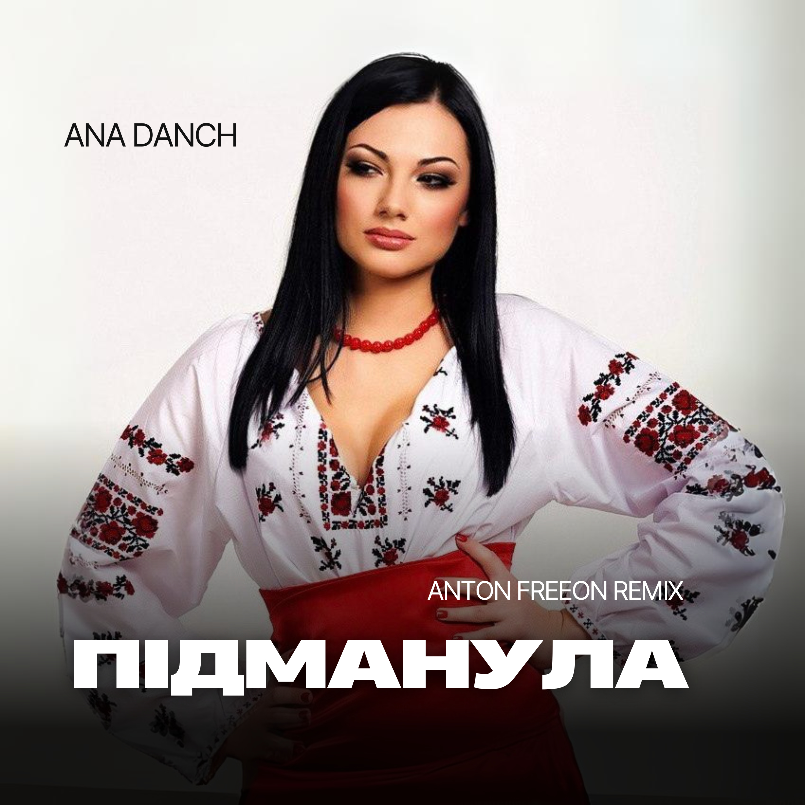

| Title | Підманула (Anton FreeON Remix) |
| English title | Pidmanula (Anton FreeON Remix) |
| Artist | Ana Danch |
| Release Type | Single |
| Release Date | 27 January 2024 |
| Genre | Slap House |
| Language | Ukrainian |
"Підманула (Anton FreeON Remix)" is a Slap House reinterpretation of Ana Danch's version of the traditional Ukrainian folk song. Retaining the song's folk foundation and additional lyrics by Uliana Danchul, the remix introduces a new electronic interpretation with music credited to Uliana Danchul and Anton FreeON. The remix by Anton FreeON brings the traditional Ukrainian material into a contemporary dance-oriented sound while preserving its connection to Ukrainian folklore.
| Artist | Ana Danch |
| Music | Uliana Danchul, Anton FreeON |
| Lyrics | Uliana Danchul |
| Arrangement / Remix | Uliana Danchul, Ukrainian folklore, Andriy Bakun; Anton FreeON (Remix) |
| Producer | Oleksandr Danchul |
| Label | Ukraine Dancing Label |